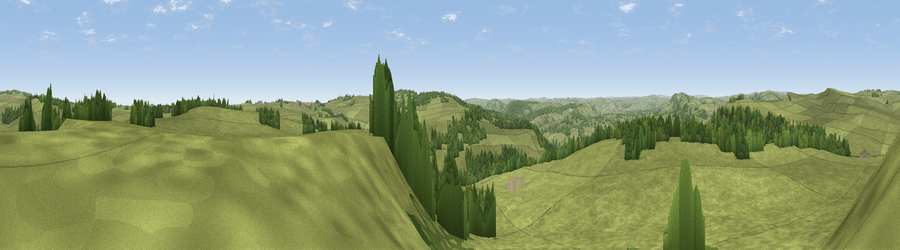

Viewpoint near Baslow
#18032 in England · top 23% of its area beats it · near BaslowWhere it is
The exact computed spot (SK 27825 73075). Click the marker for map links.
The view, rendered

A 360° render of this exact spot computed from the terrain model, tree cover and land cover — summer colours, afternoon light, calibrated against photographs of famous viewpoints. Real trees, hedges and buildings will differ in detail.
The panorama
Grey silhouette: terrain skyline in each direction (720 bearings, Earth curvature and refraction included). Dashed green: skyline with trees (+15 m) and buildings (+8 m) as obstacles. Blue strip: how far the ground is visible on each bearing.
Where the view opens
Wedge length = distance to the farthest visible ground on that bearing (vegetation-aware). Rings at 10, 25 and 50 km.
What fills the view
86% grassland · 13% woodland
Angular shares of the visible panorama (visual magnitude), not map area. Landscape diversity 0.19 (0–1 Shannon).
Key numbers
More beautiful places nearby
The staircase of upgrades: each row has a higher view potential than everything closer. Driving times are estimates from straight-line distance, calibrated against real road routing — check an actual route before setting out.
| Place | Direction | Drive | Score |
|---|---|---|---|
| Viewpoint near Curbar | WNW · 2 km | ~5 min | 59.9 |
| Viewpoint near Froggatt | NNW · 4 km | ~9 min | 65.2 |
| Viewpoint near Holmesfield | N · 6 km | ~12 min | 67.2 |
| Viewpoint near Holmesfield | N · 6 km | ~13 min | 69.4 |
| High Rake | W · 7 km | ~14 min | 71.1 |
| Viewpoint near Thornhill | NNW · 18 km | ~31 min | 74.1 |
| Viewpoint near Wharncliffe Side | N · 24 km | ~39 min | 75.2 |
| Tissington Hill | SSW · 24 km | ~39 min | 75.5 |
53.25396, -1.58440 · source: screening · position refined by local search. Computed location — check access rights before visiting.